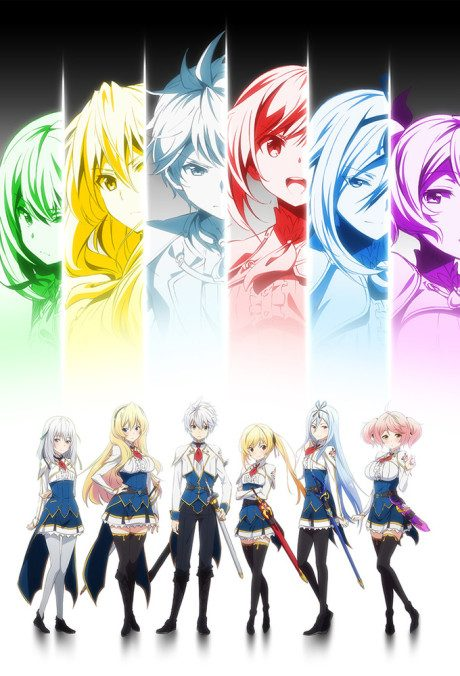
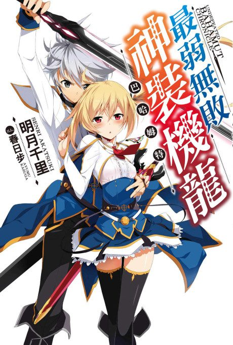
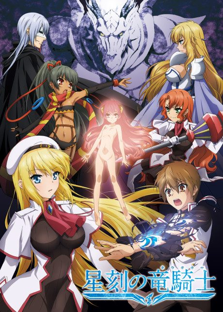

Undefeated Bahamut Chronicle
最弱無敗の神装機竜《バハムート》
Lux, a former prince, enrols at a school for girls who pilot mechanical dragons.
We haven't found where the anime ends in the light novel yet.
6.2AniList score
—Animeter, no votes yet
12episodes
Rate it or report where you stopped
Anime finished. Where does the story go next?
StatusNo source yet
We looked for where the anime ends in the light novel but found no source we trust yet. The light novel is 20 volumes, finished.
More like Undefeated Bahamut Chronicle
 Manga Vol. 56.8
Manga Vol. 56.8
 Manga Vol. 47.2
Manga Vol. 47.2
 Manga Vol. 46.4
Manga Vol. 46.4
 Unclear6.1
Unclear6.1
 Unclear6.2
Unclear6.2
 VN7.1
VN7.1
 Manga Ch. 707.1
Manga Ch. 707.1
 Manga Vol. 46.6
Manga Vol. 46.6
 Manga Vol. 86.3
Manga Vol. 86.3

Unclear6.0 Unclear5.8
Unclear5.8
 Manga Vol. 46.2
Manga Vol. 46.2